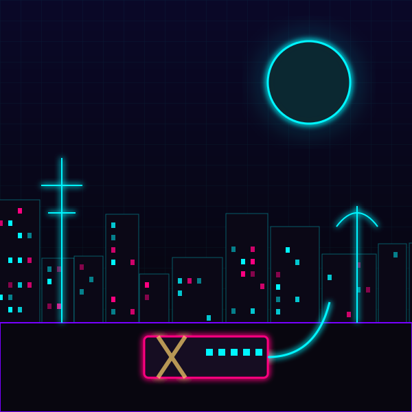

STŘEP KITSUNE · 08:13:44
Netrunnerka tě vezme na střechu. Mezi anténami tam má starý deck slepený páskou.
Než se napojíte, ukáže na Měsíc nad smogem. „Tam jednou poletím. Žádný korporace, žádný odpočty. Jen ticho.“
Podá ti kabel. „Připrav se, choome. Bude to bolet.“
